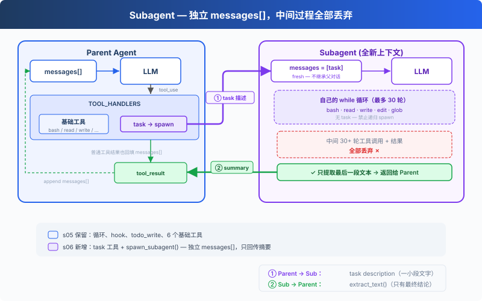

s06: Subagent — 大任务拆小，每个拿到的都是干净上下文
"大任务拆小, 每个小任务干净的上下文" — Subagent 用独立 messages, 不污染主对话。 Harness 层: 子 Agent — 上下文隔离, 注意力不漂移。
On this page
s01 → s02 → s03 → s04 → s05 → s06 → s07 → s08 → ... → s20
"大任务拆小, 每个小任务干净的上下文" — Subagent 用独立 messages[], 不污染主对话。
Harness 层: 子 Agent — 上下文隔离, 注意力不漂移。
问题
Agent 在修一个 bug。它读了 30 个文件来追踪调用链，中间聊了 60 轮。messages 列表涨到 120 条，其中大部分是"追踪调用链"的中间过程，和"修 bug"这个最终目标无关。
这些中间过程占着上下文位置，让 Agent 越来越"健忘"，它记不住最初的问题是什么了。
换个角度：你修 bug 的时候，会"开一个新终端"来追踪调用链。追踪完了，终端关掉，结果写进笔记，回到原来的终端继续修 bug。Agent 也需要这个能力：开一个独立的子进程，给它一个独立的消息列表，让它专心做一件事。
解决方案

保留上一章的最小 hook 结构和 todo_write 工具，本章重点转向新增的 task 工具。调用它时，spawn 一个子 Agent，拥有全新的 messages[]，跑自己的循环，结束后只把摘要文本回传给主 Agent。对话上下文被丢弃，但文件系统的副作用（写文件、改文件、跑命令）保留在工作目录中。
子 Agent 的工具受限：有 bash/read/write/edit/glob，但没有 task，不能递归 spawn 新的子 Agent。子 Agent 的工具调用仍经过权限 hook，安全策略不因上下文隔离而跳过。
工作原理
spawn_subagent，给子 Agent 一个全新的 messages 列表，跑自己的循环，只回传结论：
def spawn_subagent(description: str) -> str:
# 子 Agent 的工具：基础工具，但没有 task（禁止递归）
sub_tools = [
{"name": "bash", ...}, {"name": "read_file", ...},
{"name": "write_file", ...}, {"name": "edit_file", ...},
{"name": "glob", ...},
]
messages = [{"role": "user", "content": description}] # 全新 messages[]
for _ in range(30): # safety limit
response = client.messages.create(
model=MODEL, system=SUB_SYSTEM,
messages=messages, tools=sub_tools, max_tokens=8000,
)
messages.append({"role": "assistant", "content": response.content})
if response.stop_reason != "tool_use":
break
results = []
for block in response.content:
if block.type == "tool_use":
blocked = trigger_hooks("PreToolUse", block)
if blocked:
results.append({... "content": str(blocked)})
continue
handler = SUB_HANDLERS.get(block.name)
output = handler(**block.input) if handler else f"Unknown"
trigger_hooks("PostToolUse", block, output)
results.append({... "content": output})
messages.append({"role": "user", "content": results})
# 只返回最后的文本结论，中间过程全部丢弃
return extract_text(messages[-1]["content"])
主 Agent 调用时，跟调其他工具一样：
TOOLS = [
{"name": "bash", ...},
{"name": "read_file", ...},
{"name": "write_file", ...},
{"name": "edit_file", ...},
{"name": "glob", ...},
{"name": "todo_write", ...},
# s06: 新增 task 工具
{"name": "task",
"description": "Launch a subagent to handle a complex subtask. Returns only the final conclusion.",
"input_schema": {"type": "object", "properties": {"description": {"type": "string"}}, "required": ["description"]}},
]
TOOL_HANDLERS["task"] = spawn_subagent
三个关键设计决策：
| 决策 | 选择 | 原因 |
|---|---|---|
| 上下文隔离 | 全新 messages[] |
子 Agent 的中间过程不污染主 Agent 的上下文 |
| 只回传结论 | extract_text(last_message) |
不是回传整个 messages 列表 |
| 禁止递归 | 子 Agent 无 task 工具 | 防止子 Agent 再 spawn 新的子 Agent |
| 安全策略不跳过 | 子 Agent 工具调用也走 PreToolUse hook | 上下文隔离不代表权限隔离 |
dispatch 机制不变，task 工具通过 TOOL_HANDLERS[block.name] 分发。子 Agent 有独立的 SUB_SYSTEM 提示，明确要求"直接完成任务，不要再委派"。
相对 s05 的变更
| 组件 | 之前 (s05) | 之后 (s06) |
|---|---|---|
| 工具数量 | 6 (bash, read, write, edit, glob, todo_write) | 7 (+task) |
| 新函数 | — | spawn_subagent（独立 messages[] + 30 轮安全限制） |
| 上下文隔离 | 全部在主对话中 | 子 Agent 用全新的 messages[] |
| 循环 | 不变 | dispatch 不变，子 Agent 有独立 SUB_SYSTEM 和 hook 保护的循环 |
试一下
cd learn-claude-code
python s06_subagent/code.py
试试这些 prompt：
Use a subtask to find what testing framework this project uses（子 Agent 去读文件，主 Agent 只收结论）Delegate: read all .py files in agents/ and summarize what each one doesUse a task to create s06_subagent/example/string_tools.py with a slugify(text: str) function, then verify it from the parent agent
观察重点：是否出现 [Subagent spawned] / [Subagent done]？子 Agent 的工具调用是否以 [sub] ... 输出？主 Agent 最后是否只继续处理子 Agent 返回的摘要？
接下来
Agent 现在能拆任务了。但每个任务需要的知识不一样：改前端组件需要知道 React 规范，写 SQL 需要知道表结构。这些知识全塞进 system prompt，上下文直接爆了。
s07 Skill Loading → 技能按需注入，不在 system prompt 里堆文档。用到的时候才加载，和读文件一样自然。